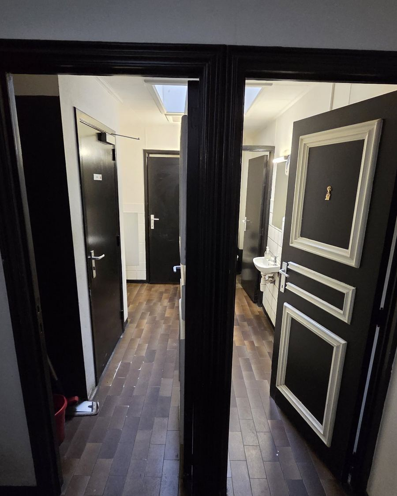
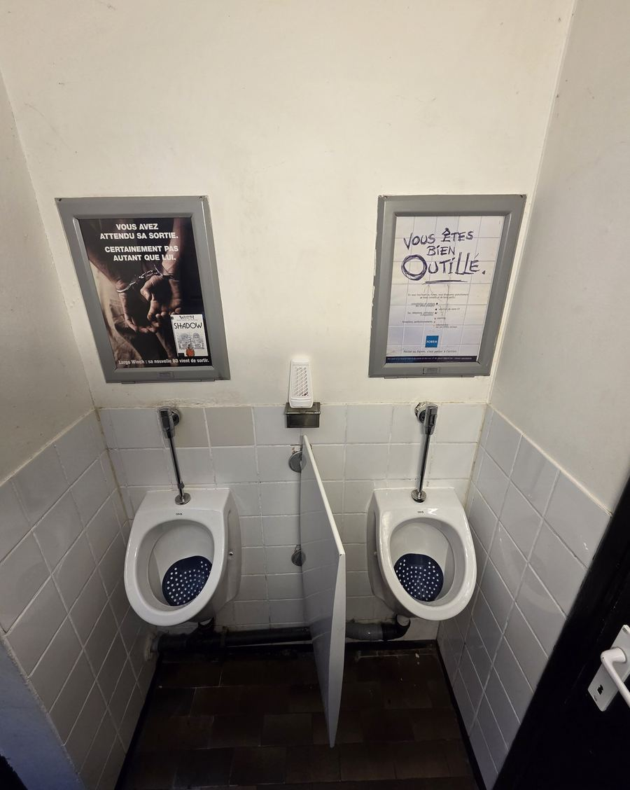
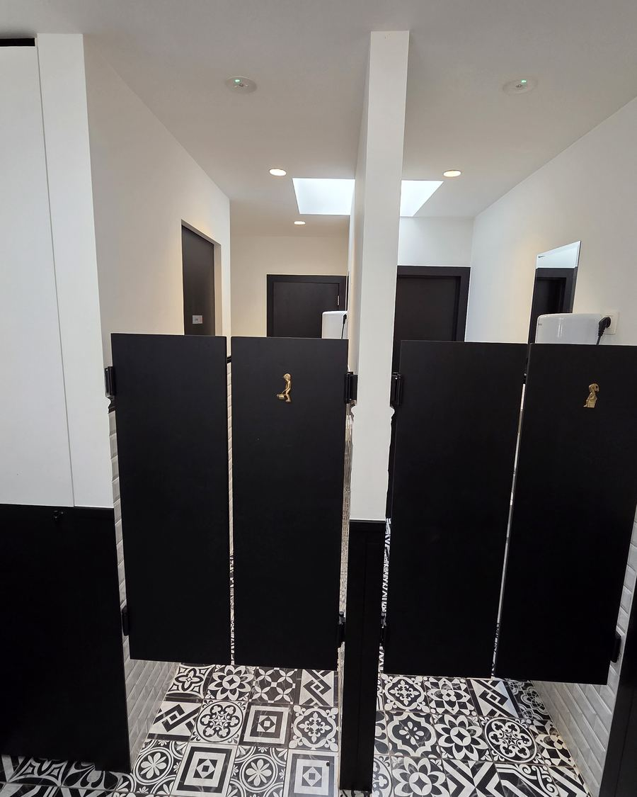
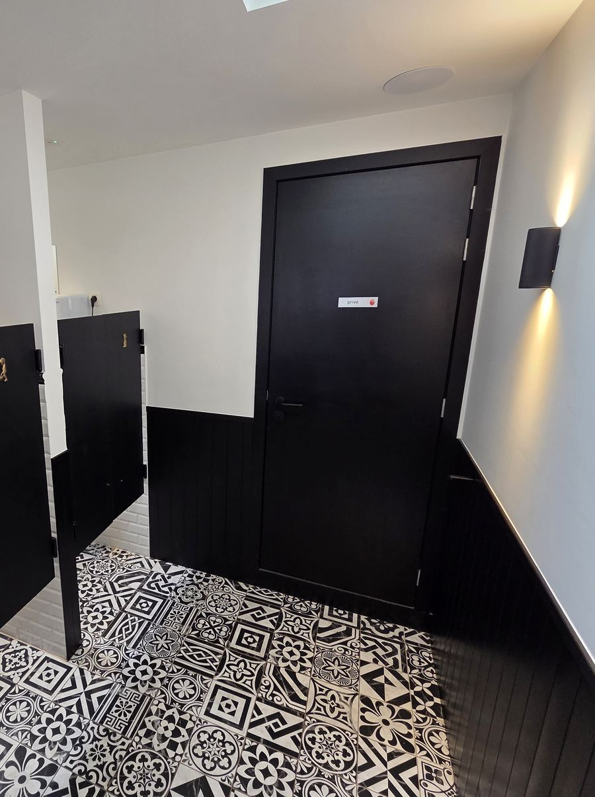
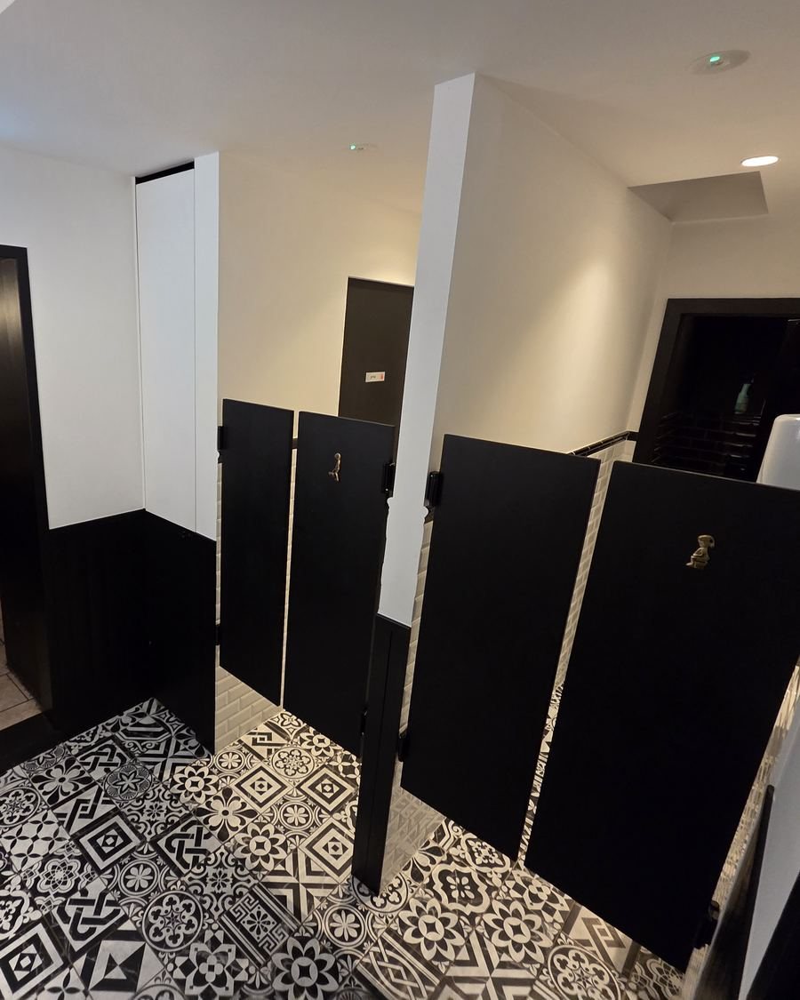
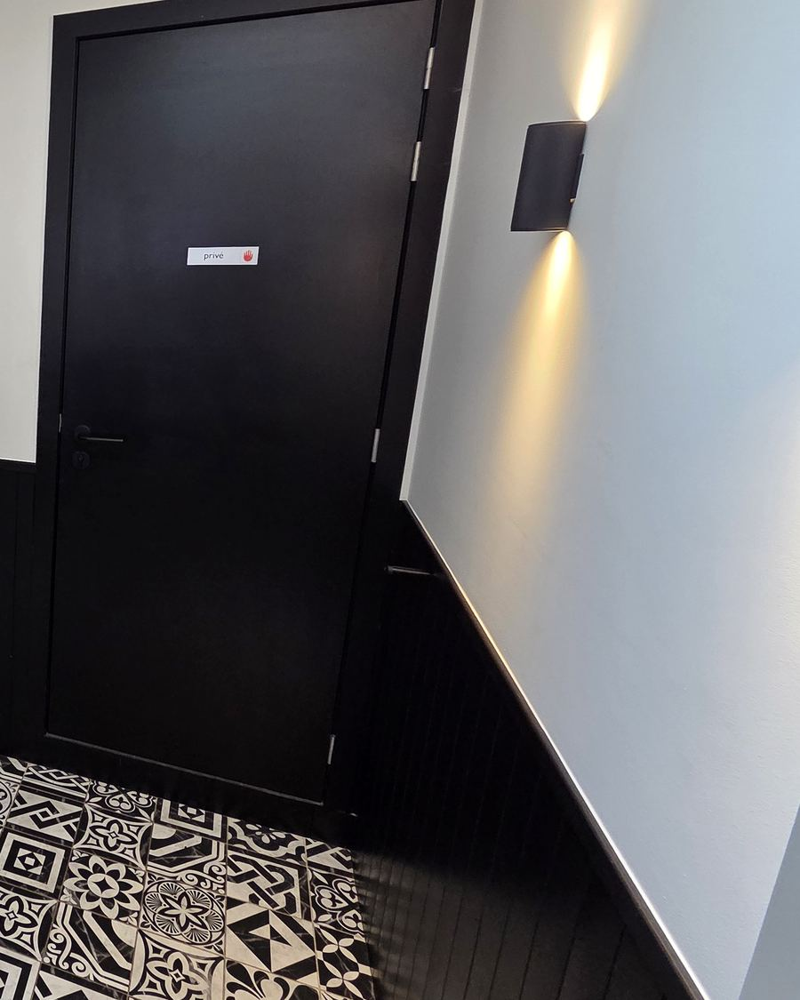
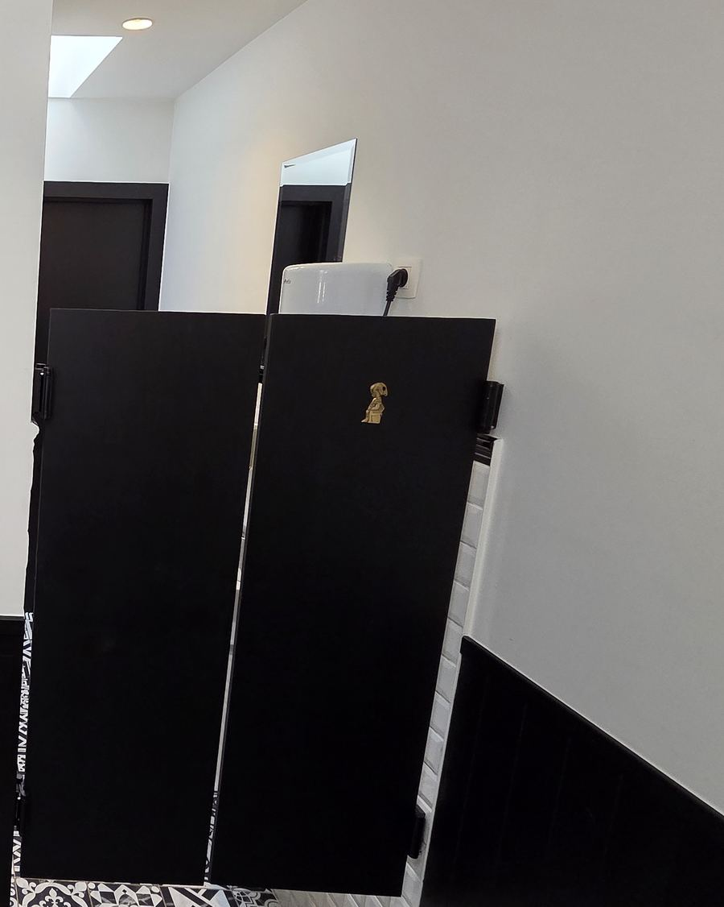

A drink, a generous plate, and no need to rush.
- Light meals all day
- Opposite Wavre church
- Open till 2am at weekends

A drink, a generous plate, and no need to rush.


The menu
Light meals served all day: the classics done properly, and now and then a slow-cooked dish when the chef feels like it.
Served all day
With your drink
Now and then, while it lasts
The dish of the day is announced at the bar and on our Google page. Prices in euros, VAT included.
Opening hours
| Sunday to Thursday | until 1am |
|---|---|
| Friday, Saturday and the eve of public holidays | until 2am |
Special opening hours are posted on our Google listing.
Getting here

The renovation
In January 2026, the back of L’Escale was completely redone: corridor, toilets, black and white cement tiles, black panelling, swing doors and skylights. The same old-style café feel, with today’s finishes.
The work was carried out by Bien Bâti, a renovation company based in Rhode-Saint-Genèse. Next step in January 2027: the front room, the bar counter and the façade.
Before · early January 2026






After




